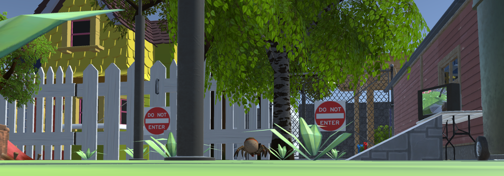

These are my projects!
CIS 410 Game Programming Project (C#, Unity Engine) - As project manager, led and managed a group of 2 other students by directing tasks, organizing workflow, and hosting scrum meetings -Created entirety of environmental design and level layout/progression -Created various C# scripts for core gameplay mechanics and player-environment interaction, such as movement, web-slinging, etc. scripts -Designed and created UI (main menu, tutorial, pause, game over/win scenes and respective scripts) -Managed Git Submissions, Deadlines and Project Quality Control https://github.com/michael-c-gao/WEBOFUNITY
I calibrated a Fisheye Stereo Camera setup using Python OPENCV to return live rectified video, pictures, and depth maps for depth detection. This was done in conjunction with YOLO V4's Object Detection capability to simultaneously determine the identity of an object and it's relative distance from the camera system, all in real time.